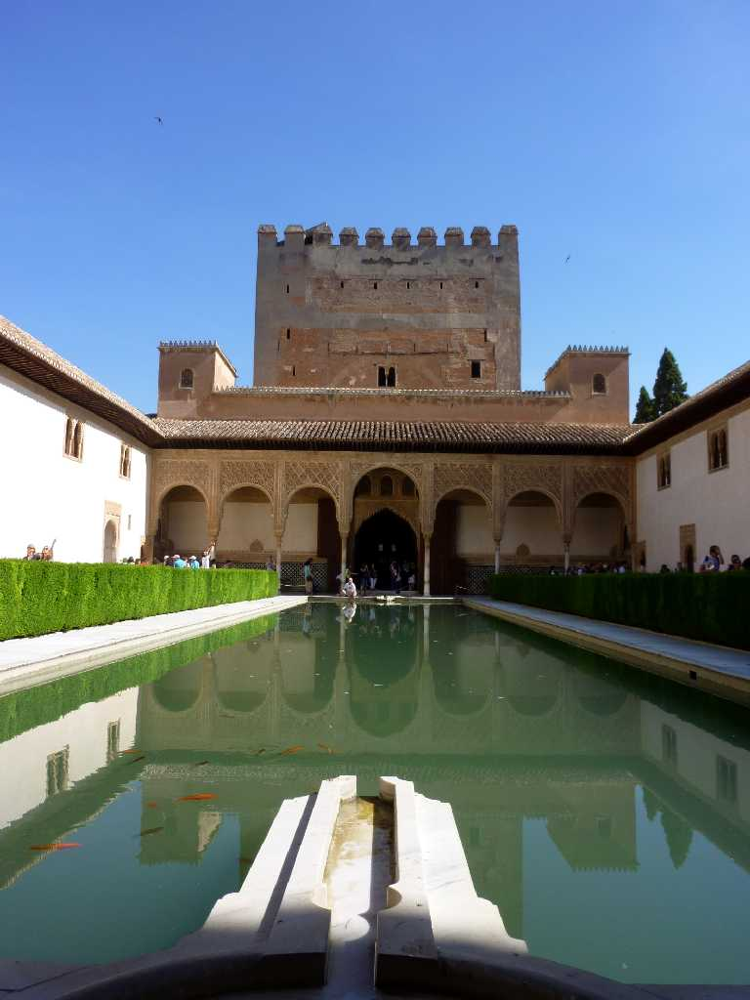
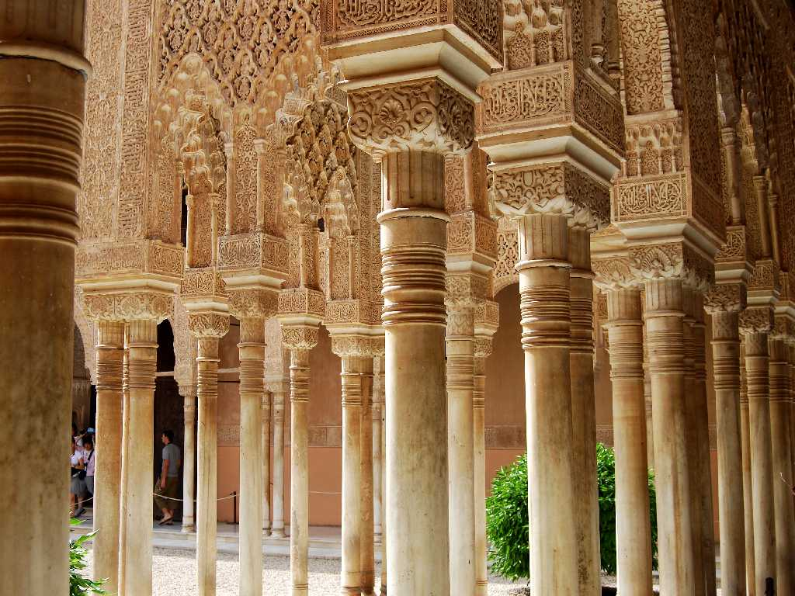
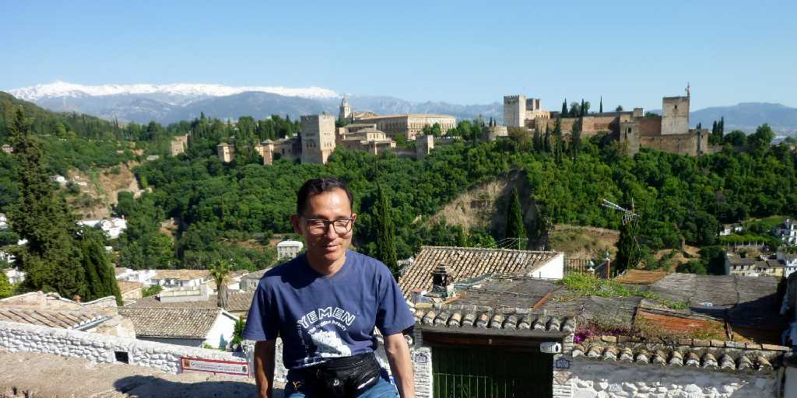

Alhambra Palace Granada
アンダルシアの宝石と云われるグラナダにあるアルハンブラ宮殿は後ウマイア朝の８世紀に軍事要塞アルカサーバが創られたのちナスル朝の１３世紀に大拡張工事が行われてイスラム建築の最高峰と云われる宮殿になった

Arabespue in Alhambra Palace
アラベスク模様が美しいアルハンブラ宮殿内

June 1 2010 Alhambra Palace & Sierra Nevada from San Nicolas
スペイン語で雪の掛かった山脈を意味する残雪が美しいシェラネバダ山脈とアルハンブラ宮殿全景